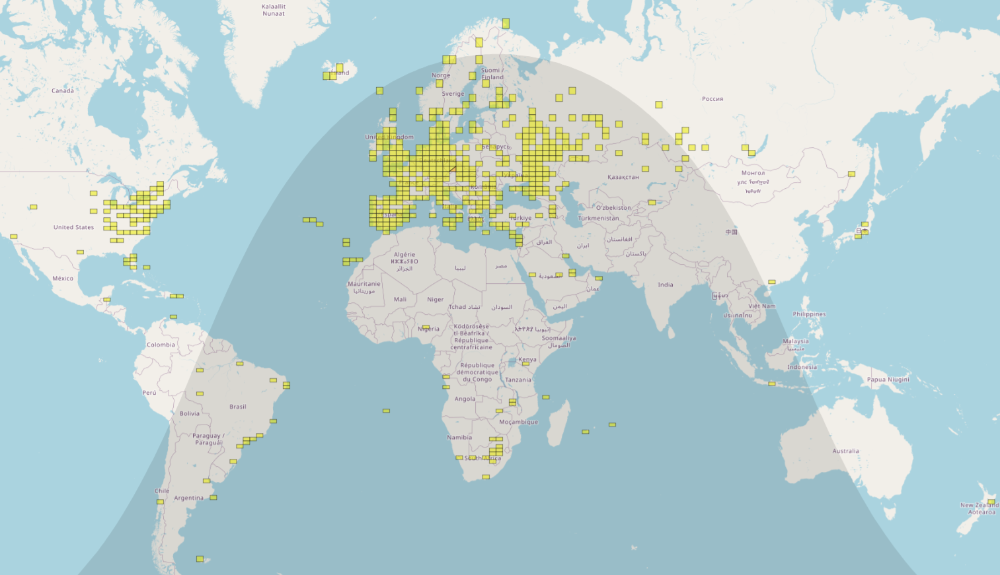

28 MHz - 10m Band
I'm quite fascinated by the 10-meter band—you never know what might happen. Every day brings a surprise, especially around the solar maximum. It's a unique band, somewhat comparable to the "magic" 6-meter band, as it hosts nearly every type of HF and VHF propagation: from F2 and sporadic E layers to more exotic modes like meteor scatter, aircraft scatter, transequatorial propagation or backscatter.
Antennas for 10 meters are relatively small, so you can easily set up a nice beam on a simple rotator. But even a vertical, dipole, or other compromise antenna will get the job done. Thanks to the band’s popularity—especially in summer or anytime in solar maximum—you'll hear lots of stations.
Due to health issues, I was homebound for a long period during 2023 and again in 2024/2025. To be honest, I was never deeply into traditional DXing or chasing DXCC countries because of time constraints. But during this period, I became even more fascinated by 10 meters, having the chance to be active on the band almost daily. I enjoy all modes, but it's worth noting that the popular digital mode FT8 was specifically designed with multihop Es propagation in mind—perfectly suited to the 10-meter band. It's amazing what you can achieve with a compromise antenna (like a G5RV or an attic dipole) and QRP power. You can really feel like a true DXer!
I especially enjoy hunting QRP CW beacons on 10 meters—often while operating outdoors. Check out my YouTube archive.
WKD 110 DXCC (101 DIGI, 52 CW) (Updated 8/Jun/2025)
My 10m log.See you on the 10-meter band!
